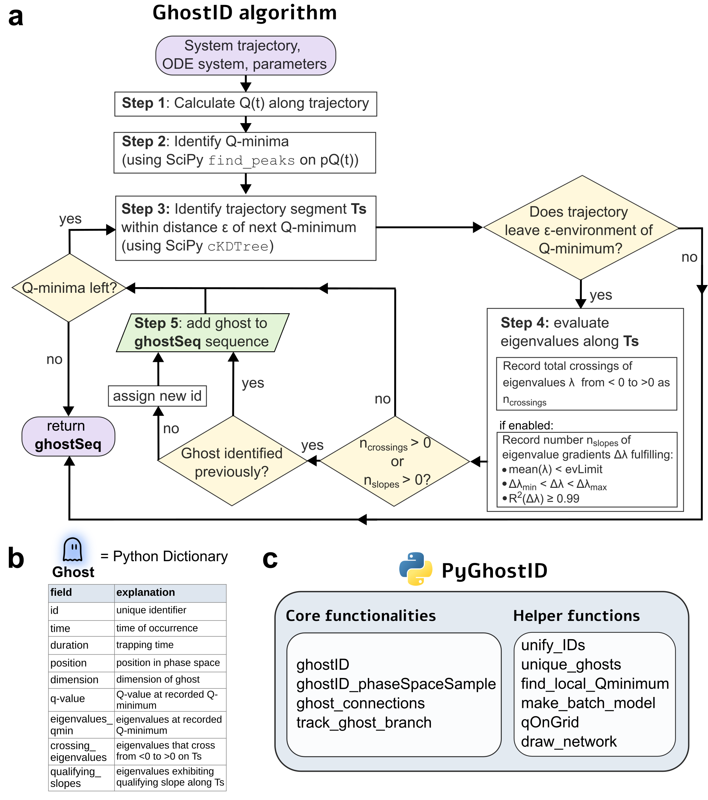

Overview
Background
PyGhostID is a Python package for identifying generalized saddle-node ghosts in the vicinity of saddle-node bifurcations and their composite ghost structures such as ghost channels and ghost cycles in dynamical systems. PyGhostID’s main function is the implementation of GhostID, a trajectory-based algorithm to identify saddle-node ghosts in dynamical systems. Besides the main algorithm, additional functions allow users to identify composite structures of ghosts (ghost cycles, channels and networks) and track ghosts versus changing parameters.

Figure 1: (a) flow-diagram of ghostID, (b) data associated with ghost states, (c) functionalities of the PyGhostID package.Installation
Install the latest version of PyGhostID via pip:
pip install PyGhostID
Contact
For questions or additional information, please contact Daniel Koch.
Citation
If you use PyGhostID or its repository in your research, please cite our paper: Daniel Koch, Akhilesh Nandan (2026). Generalized saddle-node ghosts and their composite structures in dynamical systems. arxiv: 2604.05194.